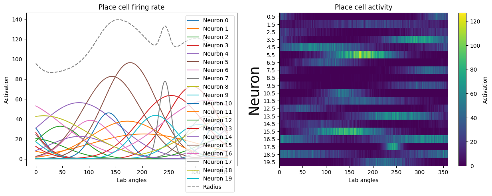

Notebook source code: notebooks/other/17_simulated_place_cells.ipynb
Set up environment paths#
In [1]:
import setup
setup.main()
%load_ext autoreload
%autoreload 2
Working directory: /Users/facosta/Desktop/code/neurometry/neurometry
Directory added to path: /Users/facosta/Desktop/code/neurometry
Directory added to path: /Users/facosta/Desktop/code/neurometry/neurometry
Imports#
In [2]:
import matplotlib.pyplot as plt
import numpy as np
import persistent_homology
import plotly.graph_objects as go
import viz
In [443]:
def create_bumps_array(positions, widths, num_angles, equal_peaks=False):
n_cells = len(positions)
angles = np.linspace(0, 360, num_angles)
place_cell_activity = np.zeros((num_angles, n_cells))
firing_rates = np.zeros((num_angles, n_cells))
for cell_id in range(n_cells):
peak_pos = positions[cell_id]
bump_std = widths[cell_id]
firing_rate = np.exp(
-((angles - 180) ** 2) / (2 * bump_std**2)
) # Gaussian bump
if equal_peaks:
firing_rate = 40 * (firing_rate / np.max(firing_rate)) # normalize to 40 Hz
else:
firing_rate = np.random.normal(40, 20) * (
firing_rate / np.max(firing_rate)
) # add some variability
place_field = np.zeros(num_angles)
place_field += np.random.poisson(firing_rate)
place_field = np.roll(place_field, int((peak_pos - 180) * (num_angles / 360)))
firing_rate = np.roll(firing_rate, int((peak_pos - 180) * (num_angles / 360)))
firing_rates[:, cell_id] = firing_rate
place_cell_activity[:, cell_id] = place_field
radius = np.linalg.norm(firing_rates, axis=1)
return firing_rates, radius, place_cell_activity, angles
In [489]:
def plot_bumps_array(firing_rates, radius, place_fields, angles):
n_cells = place_fields.shape[1]
fig = plt.figure(figsize=(15, 5))
ax1 = fig.add_subplot(121)
ax1.set_xlabel("Lab angles")
ax1.set_ylabel("Activation")
ax1.set_title("Place cell firing rate")
for cell_id in range(n_cells):
ax1.plot(
angles, firing_rates[:, cell_id], c=f"C{cell_id}", label=f"Neuron {cell_id}"
)
ax1.plot(angles, radius, c="k", label="Radius", linestyle="--", alpha=0.5)
ax1.legend()
ax2 = fig.add_subplot(122)
ax2.set_xlabel("Lab angles")
ax2.set_ylabel("Neuron #")
ax2.set_title("Place cell activity")
im = ax2.imshow(
place_fields.T,
cmap="viridis",
aspect="auto",
interpolation="none",
extent=(0, 360, place_fields.shape[1], 0),
)
ax2.set_ylabel("Neuron", fontsize=25)
ax2.set_yticks(np.arange(0.5, place_fields.shape[1]))
plt.colorbar(im, label="Activation")
return fig
In [483]:
# positions = np.linspace(0,360,3)
# positions = np.arange(0,360,120)
positions = np.random.uniform(0, 360, 20)
# widths = 30*np.ones_like(positions)
widths = np.random.normal(50, 20, len(positions))
print(positions)
equal_peaks = False
[345.05556911 203.51834063 356.57261154 294.28898086 81.18814747
177.14616756 102.84089625 320.80978271 219.21083605 306.51111302
136.74176584 172.2507609 45.95030271 254.08005602 82.4858773
143.08833483 322.35398107 242.81196506 14.90363081 225.14211069]
In [486]:
firing_rates, radius, place_cell_activity, angles = create_bumps_array(
positions, widths, num_angles=2000, equal_peaks=equal_peaks
)

In [490]:
fig = plot_bumps_array(firing_rates, radius, place_cell_activity, angles)

Choose neurons to project OR choose random projection
In [491]:
# neuron_x_id, neuron_y_id, neuron_z_id = 0, 1, 2
neuron_x_id, neuron_y_id, neuron_z_id = np.random.choice(
len(positions), 3, replace=False
)
In [492]:
x = place_cell_activity[:, neuron_x_id]
y = place_cell_activity[:, neuron_y_id]
z = place_cell_activity[:, neuron_z_id]
r = np.sqrt(x**2 + y**2 + z**2)
fig = go.Figure(
data=[
go.Scatter3d(
x=x,
y=y,
z=z,
mode="markers",
marker=dict(
size=3,
color=angles, # set color to an array/list of desired values
colorscale="hsv", # choose a colorscale
opacity=0.5,
),
)
]
)
fig.update_layout(
autosize=False,
width=600,
height=600,
scene=dict(
xaxis_title=f"neuron {neuron_x_id}",
yaxis_title=f"neuron {neuron_y_id}",
zaxis_title=f"neuron {neuron_z_id}",
),
title=f"3D Projection of activity for neurons {neuron_x_id}, {neuron_y_id}, {neuron_z_id}",
)
fig.show()
Data type cannot be displayed: application/vnd.plotly.v1+json
In [493]:
diagrams = persistent_homology.compute_persistence_diagrams(
place_cell_activity, maxdim=1
)
'compute_persistence_diagrams' executed in 12.0359s
In [494]:
viz.plot_persistence_diagrams(diagrams)

Try: delete certain cells
Seems like deleting a few cells can leave a gap and really affect PH performance!
In [123]:
delete_place_cell_activity = np.delete(
place_cell_activity,
[
5,
],
axis=1,
)
plt.imshow(
delete_place_cell_activity.T, cmap="viridis", aspect="auto", interpolation="none"
)
In [176]:
delete_diagrams = persistent_homology.compute_persistence_diagrams(
delete_place_cell_activity, maxdim=1
)
---------------------------------------------------------------------------
NameError Traceback (most recent call last)
Cell In[176], line 1
----> 1 delete_diagrams = persistent_homology.compute_persistence_diagrams(delete_place_cell_activity, maxdim=1)
NameError: name 'delete_place_cell_activity' is not defined
In [166]:
viz.plot_persistence_diagrams(delete_diagrams)
---------------------------------------------------------------------------
NameError Traceback (most recent call last)
Cell In[166], line 1
----> 1 viz.plot_persistence_diagrams(delete_diagrams)
NameError: name 'delete_diagrams' is not defined
In [263]:
fig = plt.figure()
ax = fig.add_subplot(projection="3d")
neuron_x_id = 0
neuron_y_id = 1
neuron_z_id = 2
x = place_cell_activity[:, neuron_x_id]
y = place_cell_activity[:, neuron_y_id]
z = place_cell_activity[:, neuron_z_id]
r = np.sqrt(x**2 + y**2 + z**2)
ax.scatter(x, y, z, alpha=0.5, c=r, cmap="viridis");